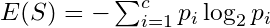

1 ML
TOC
- Support Vector Machines
- Trees
- Decision Trees
- Random Forest
- Distributional Tree/Forest
- partykit
- drf
- Boosting
- Gradient Boosted Machines (GBM)
- LightGBM
- XGBoost
- Component-Wise Boosting
1.1 Support Vector Machines
- Misc
- packages: {e1071}, {kernlab}, {LiblineaR}, {{sklearn}}
- Also see Model Building, tidymodels >> Model Specification >> Support Vector Machines
- Works on the principle that you can linearly separate a set of points from another set of point simply by transforming the dataset from dimension n to dimension n + 1.
- The transformation is made by a feature transformation function, (x). For two dimensions, a particular (x) might transform the vector, x = {x, x}, which is in 2 dimensions, to {x, (2xx), x}, which is 3 dimensions
- Transforming a set of vectors into a higher dimension, performing a mathematical operation (e.g. dot product), and transforming the vectors back to lower dimension is involves many steps and therefore is computationally expensive.
- The problem can become computationally intractable fairly quickly. Kernels are able perform these operations in much fewer steps.
- Gaussian Kernel K(x, y) = exp(- x - y )
- K(x,y) performs the dot product in the higher dimensional space without having to first transform the vectors
- Creates a hyperplane at a threshold that is equidistant between classes of the target variable
- Edge observations are called Support Vectors and the distance between them and the threshold is called the Maximum Margin
- Hyperparameters
- gamma All the kernels except the linear one require the gamma parameter. ({e1071} default: 1/(data dimension)
- coef0 Parameter needed for kernels of type polynomial and sigmoid ({e1071} default: 0).
- cost The cost of constraints violation ({e1071} default: 1)it is the C-constant of the regularization term in the Lagrange formulation.
- C = 1/ (R) or 1/ (sklearn)
- When C is small, the regularization is strong, so the slope will be small
- degree - Degree of the polynomial kernel function ({e1071} default: 3)
- epsilon - Needed for insensitive loss function (see Regression below) ({e1071} default: 0.1)
- When the value of epsilon is small, the model is robust to the outliers.
- When the value of epsilon is large, it will take outliers into account.
- nu - For {e1071}, needed for types: nu-classification, nu-regression, and one-classification
- Regression

- Stochastic Gradient Descent is used in order minimize MAE loss
- Also see
- Model building, sklearn >> Algorithms >> Stochaistic Gradient Descent (SGD)
- Loss Functions >> Misc >> Mean Absolute Error (MAE)
- Also see
- Epsilon Insensitive Loss - the idea is to use an insensitive tube where errors less than epsilon are ignored. For errors > epsilon, the function is linear.
- Epsilon defines the width of the tube.
- See Loss Functions >> Huber loss for something similar
- Squared Epsilon Insensitive loss is the same but becomes squared loss past a tolerance of epsilon
- L2 typically used the penalty
- In SVM for classification, margin maximization is the focus which is equivalent to the coefficient minimization with a L2 norm. For SVR, we usually focus on epsilon insensitive.
- Stochastic Gradient Descent is used in order minimize MAE loss
1.2 Trees
Algorithmic models that recursively split the data into smaller and more homogeneous subgroups. Predictions are the same for every member of the subgroup (aka piece-wise constant). Forests smooth out the piecewise predictions by averaging over groups of trees.
How Tree models get probabilities Method 1: Each tree predicts the class of x according to the leaf node x falls within. The leaf node output is the majority class of the training points it contains. The predictions of all trees are considered as votes, and the class with the most votes is taken as the output of the forest. This is the original formulation of random forests proposed by Breiman (2001).
Method 2: Each tree outputs a vector \[p1,,pk\], where k is the number of classes, representing the predicted probability of each class given x. This may be estimated as the relative class frequencies of training points in the leaf node x falls within. The forest output is the average of these vectors across trees, representing a conditional distribution over classes given x. * Example: data point falls into a tree's leaf where yellow is the predicted class (2nd child split)  * For this tree in the ensemble, there are 3 yellow and 1 green in the terminal leaf (2nd child split). Therefore the probability of Yellow is 75%. * For each class, the trees that predict that class have their probabilites averaged to produced the predicted probability for that class.Decision Trees
- Classification
Showing entropy but misclassification error or the gini index can be used.
Calculate Shannon Entropy of dependent variable (Y):
 where P(Y) is the marginal probability
where P(Y) is the marginal probabilityFor a binary variable, this would be
In general the Shannon Entropy equation is  where p is a probability and c is the number of classes for the variable and S = subset of data or the node.
Probabilities are between (0,1) and taking a log of numbers in this interval produces a negative value. Hence, the negative at the beginning of the expression.
If the natural log, ln, is used then its called deviance
Calculate the entropy of the target, Y, with respect to each independent variable, x. For variable,
 , with number of classes, c :
, with number of classes, c : I do NOT like the way the equation is written above. In videos, this type of entropy isnt given a name, but I think it matches conditional entropy in its description and calculation.
- Conditional Entropy (for a particular x),
- This definition uses
 where H is used to as the symbol for entropy.
where H is used to as the symbol for entropy.
- This definition uses
- Conditional Entropy (for a particular x),
 is the marginal probability for that class of that variable, i.e. ratio of instances of that class in the entire dataset.
is the marginal probability for that class of that variable, i.e. ratio of instances of that class in the entire dataset.example:
- Not explicitly shown above, but for the entropy calculations, it uses the sum of the rows as the denominator in probability calculations. This fits with a conditional type of entropy.
- Calculate information gain for variable
-
- Repeat for all independent variables
- Calculate information gain for variable
Select the independent variable with the largest gain for first split (
- First split, i.e. root node, is the most influential variable
If categorical variable chosen, leaves are all levels of that variable
- Subset dataset by var == level (for each branch
- Repeat entropy and information gain calculations on the subsetted data set
- Branches with entropy > 1 are split unless some other stopping criteria is reached
- Choose variable with largest information gain and split by that variable
- Keeping repeating until maxdepth reached or minimum node size (number of rows in subset) reached
Numerical vars are binned and treated like categorical vars
Predicted class is the mode of the classes in the appropriate terminal node
- Regression
- For each predictor var, choose a separator value, s
- e.g var1 > 5 and var1 <= 5 where s = 5
- Calculate the mean y value for both regions then calculate the MSE ((obs - mean)^2) of both regions. Sum of both MSEs. The optimal separator produces the lowest sum MSE.
- Whichever predictor has lowest sum MSE is chosen as the split variable.
- Recursively repeat. For example, repeat on region where var1 >5 and repeat on region where var1 <= 5.
- Continue until max.depth, max splits reached or data points in created region is less than a minimum or MSEs being calculated are all greater than a chosen amount, or etc. (Hyperparameters)
- Prediction is the mean in the appropriate terminal node
- For each predictor var, choose a separator value, s
- Classification
Random Forest

Several independent decision trees are fitted. Each tree just gets a part of the variable and then splits the outcome space according to the features in X When we drop down a new point x, it will end up in a leaf for each tree. A leaf is a set with observations i and taking the average over all yi in that leaf gives the prediction for one tree. These predictions are then averaged to give the final result. Thus, for a given x if you want to predict the conditional mean of Y given that x, you: Drop down the x each tree (this is indicated in red in the above figure). Since the splitting rules were made on X, your new point x will safely land somewhere in a leaf node.
For each tree you average the responses yi in that leaf to get an estimate of the conditional mean of each tree. You average each conditional mean over the trees to get the final prediction.Averaging the prediction of all trees leads to a marked reduction in variance.
Missing Predictor Data See StatQuest: Random Forests Part 2: Missing data and clustering video for more details
Process: Classification model Missingness is in the training data Choose intial values for the missing data Looks at that predictor's values that have the same outcome value as the observation with the missing data Categorical: For example, if the row has an observed outcome of 1 (i.e. event), then it will look at that predictor's values with outcome = 1 and choose the most popular category for the missing value Numeric: same as categorical, except the median value of predictor is chosen for the missing value Create a "Proximity Matrix" to determine which observation is most similar to observation with the missing data The matrix values are counts of how many times each row ends up in the node as the missing data row across all the trees in the forest The counts are then divided by the number of trees in the forest Categorical: Weights for each category are calculated (see video). These weights are multiplied times the observed frequency of the category in the training data. The category with the highest weighted frequency becomes the new value for the missing data. Numerical: The weights are used to calculate a weighted average. So, weight \* median is the new value for the missing data Process is repeated until the values don't change within a tolerance Missingness in the out-of-sample data A copy of the observation with the missingness is made for each outcome category. The proximity matrix procedure is done for each copy Then a prediction for each copy with it's new value is made in each tree of the forest. (of course the label for each copy has now been stripped) Whichever copy had it's (stripped) outcome label predicted correctly by the most trees wins and that label is prediction for that observation
Isolation Forests
- Used for anomaly detection. Algorithm related to binary search.
- Notes from paper: https://cs.nju.edu.cn/zhouzh/zhouzh.files/publication/icdm08b.pdf
- The tree algorithm chooses a predictor at random for the root node. Then randomly chooses either the minimum or the maximum of that variable as the splitting value. The algorithm recursively subsamples like normal trees (choosing variables and split points in the same manner) until each terminal node has one data point or replicates of the same data point or preset maximum tree height is reached. Across the trees of a forest, anomalies with have a shorter average path length from root to terminal node.
- The algorithm is basically looking for observations with combinations of variables that have extreme values. The process of continually splitting subsamples of data will run out data points and be reduced to a single observation more quickly for an anomalous observation than a common observation.
- Makes sense. Picturing a tree structure, there shouldnt be too many observations with more that a few minimums/maximums of variable values. The algorithm weeds out these observations as it moves down the tree structure.
- Any or all of these wouldnt necessarily be global minimum/maximums since were dealing with subsamples of variable values as we move down the tree.
- Paper has some nice text boxes with pseudocode that goes through the steps of the algorithm.
- Anomaly scores range from 0 to 1. Observations with a shorter average path length will have a larger score.
- Anomaly score,
- where E(h(xi)) is the average path length across the isolation forest for that observation

- where H(i) is the Harmonic number,

- where H(i) is the Harmonic number,
- Guidelines
- The closer an observations score is to 1 the more likely that it is an anomaly
- The closer to zero, the more likely the observation isnt an anomaly.
- Observations with scores around 0.5 means that the algorithm cant find a distinction.
- Anomaly score,
Distributional Trees/Forests
- Blends the distributional modeling of gamlss (additive, nonlinear, location, scale, shape) and the abrupt-change detection, additive + multiplicative effects capability, inclusion of interaction effects of decision trees / random forests. For regression trees, estimating all the distributional parameters instead of just the mean makes calculating the uncertainty easier.
- CART trees dont have a concept of statistical signicance, and so cannot distinguish between a signicant and an insignicant improvement in the information measure.
- CART tree predictions are piecewise-constant (every observation in the node has the same prediction), it will not be accurate unless the tree is large. But a large tree is harder to interpret than a small one.
- Linear trends are difficult for trees with piecewise-constant predictions
- Algorithm splits based on changes in the mean and higher moments. So able to capture things like changes in variance.
- Conditional distributions allow for the computation of prediction intervals.
- This framework embeds recursive partitioning into statistical model estimation and variable selection
- The statistical formulation of the algorithm ensures the validity of interpretations drawn from the resulting model
- {partykit}
- Notes from: https://arxiv.org/pdf/1804.02921.pdf
- tl;dr procedure
- For each distributional parameter (e.g. mean, sd), a score matrix is computed using the target values and the distributions likelihood function
- The score matrix is used to create a test statistic for each predictor
- The predictor with the lowest p-value associated with its test statistic is the splitting variable
- The split point is determined by the point that produces the lowest p-value in one of the split regions
- Process continues for each leaf until no variables produce a p-value below a certain threshold (e.g. = 0.05)
- The distributional parameters associated with the leaf that a new observation falls into is used as the prediction for a tree.
- Tree procedure
- For each distributional parameter (e.g. mean, std.dev), calculate the value of the maximum likelihood estimator (MLE)
- Take the derivative of the log-likelihood function. Plug in the value(s) of the MLE parameter(s) and a yi value to get a score for every value of the response variable. Repeat for each distributional parameter. (The score should fluctuate around zero.)
and where k is the number of distributional parameters and n is the number of training observations
Gaussian example with
 :
:Solve for the MLE of the mean and calculate the value:

Solve for the MLE of the variance and calculate the value:

Were calculating a score for each value of the outcome variable so we can remove the summation symbol from the derivative of the log-likelihood function w.r.t. the mean. This leaves us with the mean score function:
Same thing but with the derivative of the log-likelihood function w.r.t. the variance:

- Null Hypothesis test each predictor variable vs the parameter score matrix where H0 = independence Two methods: CTree and MOB
- CTree is permutation test based
- Each test statistic vector, T, for 1,,l predictors and n observations is calculated by:
 where
where  is the 1xk row of the score matrix and v is a transformation function that depends on whether the predictor variable, Z, is a numeric or character type.
is the 1xk row of the score matrix and v is a transformation function that depends on whether the predictor variable, Z, is a numeric or character type.
- If the predictor variable, Z, is a numeric:
- v is an identity function, so Z remains unchanged.
- Corresponding to the first observation, the first row of the score matrix is multiplied by the first value of the predictor variable resulting in a 1xk row vector.
- n 1xk row vectors are added together
- The summed 1xk vector is transposed by the vec function into the k-vector, T.
- If the predictor variable, Z, is a character variable with H categories:
- v creates an indicator variable where the hth value is 1 indicates that Zis value is the hth category.
- Corresponding to the first observation, we multiply this Hx1 vector times the 1xk, first row of the score matrix which results in a sparse Hxk matrix.
- n Hxk matrices are added together
- vec then stacks each column of the summed Hxk matrix to create a column vector, T, with H*k rows.
- If the predictor variable, Z, is a numeric:
- T is standardized by maximum or quadratic method.
- t just represents a statistic thats calculated from a permutation of the scores. T is handled in the same way.
- partykit::ctree.pdf shows the calculations for and

- where + is the pseudo-inverse of the covariance matrix
- Calculating the pseudo-inverse makes this method more computationally intensive
- Using this quadratic method, c is Chi-Square test statistic.
- where + is the pseudo-inverse of the covariance matrix

- For the maximum method, c is Normal test statistic (partykit::ctree.pdf)
- no idea why the numerator has one k and the bottom has kk. Maybe its a typo.
- Find the p-value associated with each predictors c statistic
-
This says the p-value, P, is the probability,
 , (associated with the null hypothesis for this particular variable) that the standardized T stat is as or more extreme than the group of standardized t stats of the permuted scores.
, (associated with the null hypothesis for this particular variable) that the standardized T stat is as or more extreme than the group of standardized t stats of the permuted scores.is the symmetric group of permutations and weights. Weights being either 0 or 1 depending on whether the observation is present in that nodes data subset.
-
- Each test statistic vector, T, for 1,,l predictors and n observations is calculated by:
- MOB stands for model based method
- Uses a M-Fluctuation test to test for an instability by calculating a supLM test statistic. An instability is whats interpreted from a p-value < 0.05

- is a minimum amount of scores that you choose, then .
No guidelines for . In addition to choosing a minimum, the paper does mention also trimming node data points at each end by 10%.
is called its variance function.
-
 means floor of nt, which means round down to the integer.
means floor of nt, which means round down to the integer.The subscript,
 , says the scores are ordered from highest to lowest (aka anti-rank) according to the predictor variable, Zj, values
, says the scores are ordered from highest to lowest (aka anti-rank) according to the predictor variable, Zj, values
covariance matrix
- is a minimum amount of scores that you choose, then .
- The distribution from which the p-value is calculated has something to do with a Bessel process and stuff converging to a Brownian Bridge, so I decided to shut it down here.
- CTree is permutation test based
- Bonferonni adjust the p-value according the number of variables, m
- Select predictor variables with adjusted p-values lower than the threshold
- From that selection, the predictor with the lowest p-value is chosen as the splitting variable.
- If no p-values are lower than the threshold, splitting is halted and the terminal node is reached for that branch (aka pre-pruning).
- Pre-pruning not usually done in distributional forests (mincriterion = 0).
- Choose the optimal split point for the chosen variable where the lowest p-value is produced in one of the two created sub-regions (i.e the maximum test statistic).
- Procedure is repeated (like traditional trees) in the created leaves and continues until stopping criteria reached (e.g. no p-values lower than threshold, number of observations in node is below minimum, etc)
- In practice, predicting, using just a tree, involves finding the node with the criterion that fits the new observation and using the estimated distributional parameters of the subsample belonging to that node as the model prediction.
- The paper says this can be thought of as a weighted maximum likelihood estimation. The mathematical notation is similar to what I show below for forests.
- Forest procedure
- The idea of random forests is to train an ensemble of trees, each on dierent training data obtained through resampling or subsampling. In each node only a random subset of the covariates is considered for splitting to reduce the correlation among the trees and to stabilize the variance of the model
- Notes from: https://arxiv.org/pdf/1701.02110.pdf
- Pretty good explainer of the weight system used below to calculate predicted means across all leaves in the forest (from {drf} explainer)
- Instead of directly calculating the mean in a leaf node, one calculates the weights that are implicitly used when doing the mean calculation. The weight wi(x) is a function of (1) the test point x and (2) an observation i. That is, if we drop x down a tree, we observe in which leaf it ends up. All observations that are in that leaf get a 1, all others 0.
- So if we end up in a leaf with observations (1,3,10), then the weight of observations 1,3,10 for that tree is 1, while all other observations get 0.
- We then further divide that weight by the number of elements in the leaf node.
- In the example before, we had 3 observations in the leaf node, so the weights for observations 1,3, 10 are 1/3 each, while all other observations still get a weight of 0 in this tree. Averaging these weights over all trees gives the final weight wi(x).
- Calculating the mean as we do in a traditional Random Forest, is the same as summing up wi(x)*yi
- Instead of directly calculating the mean in a leaf node, one calculates the weights that are implicitly used when doing the mean calculation. The weight wi(x) is a function of (1) the test point x and (2) an observation i. That is, if we drop x down a tree, we observe in which leaf it ends up. All observations that are in that leaf get a 1, all others 0.
- For predictions:
- For a training observation and a tree, determine whether a new observation z belongs in the same node as the training observation, zi.
- Calculate a weight according to whether the new observation and the training observation are in the same node.
- If they are in the same node
- where i denotes the training observation and n is the number of observations in that node of that particular tree, t.
- If zi, the training observation, and the new observation, z, arent in the same node
- wit = 0
- If they are in the same node
- Calculate wit for each tree the training observation belongs to.
- Resampling or subsampling may exclude a training observation from some of the trees
- Sum all tree weights, wit , for that training observation and divide by the number of trees to get the forest-weight for that training observation.
-
- Where Ti is the total trees that use that training observation in its learning sample.
- So the forest weight is the average weight per tree for that training observation
- In the paper, this process is described by a more compact notation:

- The numerator in the end part of this equation indicates whether the bth terminal node, Bb , contains the training observation, zi, and the new observation, z, for tree, t.
- is the number of observations in that terminal node
-
- The paper describes predictions being calculated by a weighted MLE as it did for a single tree, but for forests it didnt explicitly give an in practice description of process.
-
- Each parameter that has been calculated for each terminal node of each tree has a subset of the learning data associated with it. The forest weight-likelihood products of each observation are summed over this subset. The parameter with the largest sum is chosen as the prediction.
- Repeat for each distributional parameter.
- Each parameter that has been calculated for each terminal node of each tree has a subset of the learning data associated with it. The forest weight-likelihood products of each observation are summed over this subset. The parameter with the largest sum is chosen as the prediction.
-
- {drf}
- Notes from DRF: A Random Forest for (almost) everything
- Ultimately when a RF finishes splitting data, each leaf should ideallly contain a homogeneous set of points in terms of approximating a the conditional distribution, P(Y|X=xi), but this only applies to the conditional mean of that leaf. As seen in the pic, the mean doesnt fully describe that leafs conditional distribution.
- Every distribution except x2 has a similar means, but sets (x1,x4,x6) and (x3, x5, x7) have different variances.
- drf is able to fit a RF with these more homogeneous leaves by transforming the leafs yi subsamples into a Reproducing Kernel Hilbert Space with a kernel.
- In this infinite-dimensional space, conditional means are able to fully represent conditional distributions and the Maximum Mean Discrepancy (MMD) is (efficiently) calculated.
- The MMD measures the similarity between distributions
- Thus if the conditional distribution of Y given xi and xj are similar, they will be grouped in the same leaf.
- drf uses the same weighting system for its forest as {partykit} in order to produce predictions.
- Blends the distributional modeling of gamlss (additive, nonlinear, location, scale, shape) and the abrupt-change detection, additive + multiplicative effects capability, inclusion of interaction effects of decision trees / random forests. For regression trees, estimating all the distributional parameters instead of just the mean makes calculating the uncertainty easier.
1.3 Boosting
- from https://www.economist.com/graphic-detail/2021/03/11/how-we-built-our-covid-19-risk-estimator)
- In order to capture such complexity, we needed to allow for the possibility that comorbidities do not have constant effects that can simply be added together, but instead interact with each other, producing overall risk levels that are either higher or lower than the sum of their parts.
- Says main effects werent good enough and needed to use interactions
- Gradient-boosted trees make predictions by constructing a series of decision trees, one after the other. The first tree might begin by checking if a patient has hypertension, and then if they are older or younger than 65. It might find that people over 65 with hypertension often have a fatal outcome. If so, then whenever those conditions are met, it will move predictions in this direction. The next tree then seeks to improve on the prediction produced by the previous one. Relationships between variables are discovered or refined with each tree.
- In order to capture such complexity, we needed to allow for the possibility that comorbidities do not have constant effects that can simply be added together, but instead interact with each other, producing overall risk levels that are either higher or lower than the sum of their parts.
- Difference between XGBoost and LightGBM (Raschka)
- XGBoosts trees are based on breadth-first search, comparing different features at each node.
- LightGBM performs depth-first search, focusing on a single feature & growing the tree from there.
- Gradient boosted machines (GBM) aka Gradient tree boosting
Choose a differentiable loss function, , such as
 . In gradient boosting, 1/n is exchanged for 1/2, to make it differentiable. The mean of the loss function, SSE in this case, calculated over all observations for a model is called the empirical risk which is what boosting is trying to minimize.
. In gradient boosting, 1/n is exchanged for 1/2, to make it differentiable. The mean of the loss function, SSE in this case, calculated over all observations for a model is called the empirical risk which is what boosting is trying to minimize.Calculate the negative gradient, aka first derivative. For regression trees, this turns out to be
 which is just the residuals. Pg 360 of The Elements of Statistical Learning has other loss functions and their negative gradients. Classification uses a multinomial deviance loss function.
which is just the residuals. Pg 360 of The Elements of Statistical Learning has other loss functions and their negative gradients. Classification uses a multinomial deviance loss function.Initialize using the optimal constant model, which is just a single terminal node tree. Think this means the initial predictions are just mean of the target,
Calculate the negative gradient vector (residuals), r, by plugging in the predicted values.
Fit a regression tree with the residuals, r, as the target variable. The mean of the residuals for that region (terminal node) is the prediction,
 .
.Add the predicted residuals vector to the initial predictions vector, to get the next set of predictions to feed into the negative gradient equation.
Repeat steps 4 - 6 until some stopping criteria is met.
- LightGBM
- Find optimal split points using a histogram based algorithm
- GOSS (Gradient Based One Side Sampling)
- retains instances with large gradients while performing random sampling on instances with small gradients.
- Example: Gaussian Regression - observations with small residuals are downsampled by random selection while those observations with large residuals remain
- retains instances with large gradients while performing random sampling on instances with small gradients.
- GOSS (Gradient Based One Side Sampling)
- EFB (Exclusive Feature Bundling)
- Reduce feature space by bundling features together that are mutually exclusive (i.e. varA doesnt take a value of 0 in the same observation as varB).
- i.e. Bundles sparse features together
- Create bundles and assign features
- Construct a graph with weighted (measure of conflict between features) edges. Conflict is measure of the fraction of exclusive features which have overlapping non zero values.
- Sort the features by count of non zero instances in descending order.
- Loop over the ordered list of features and assign the feature to an existing bundle (if conflict < threshold) or create a new bundle (if conflict > threshold).
- Merging
- Article wasnt coherent on this precedure
- Reduce feature space by bundling features together that are mutually exclusive (i.e. varA doesnt take a value of 0 in the same observation as varB).
- Find optimal split points using a histogram based algorithm
- XGBoost
- FYI has various gradient function families: binomial, poisson, tweedie, softmax (multi-category classification)
- Utilizes histogram-based algorithm for finding optimal split points.
- Buckets continuous features into discrete bins to construct feature histograms during training. It costs O(#data * #feature) for histogram building and O(#bin * #feature) for split point finding.
- Regularization: It penalizes more complex models through both LASSO (L1) and Ridge (L2) regularization to prevent overfitting.
- Regularization function

- This function gets minimized during training
- T is the total number of trees
- w is a leaf weight
- Tuning parameters
- controls how much we want to penalize the sum of the absolute value of leaf weights (L1 regularization)
- controls how much we want to penalize the sum of squared leaf weights (L2 regularization)
- is used to control how the number of trees in the model is penalized
- Regularization function
- Sparsity Awareness: XGBoost naturally admits sparse features for inputs by automatically learning best missing value depending on training loss and handles different types of sparsity patterns in the data more efficiently.
- Weighted Quantile Sketch: XGBoost employs the distributed weighted Quantile Sketch algorithm to effectively find the optimal split points among weighted datasets.
- Cross-validation: The algorithm comes with built-in cross-validation method at each iteration, taking away the need to explicitly program this search and to specify the exact number of boosting iterations required in a single run.
- Component-wise Boosting (From mboost_PKG tutorial docs)
- tl;dr - Same as GBM except instead of fitting a tree model to the residuals, youre fitting many types of small models (few predictors). Best small model updates the predictions after each iteration.
- The goal is to minimize empirical risk, where is the loss function and the predictor function
- The loss function is usually the negative log-likelihood function for the distribution of the outcome variable. For a Gaussian distribution, this is equivalent to the least squares objective function
- Steps
Compute the negative gradient of the loss function which is the negative first derivative with respect to the predictor function, .
 can be thought of as the vector of predictions at the mth iteration of the algorithm. So to begin, we create an initial vector,
can be thought of as the vector of predictions at the mth iteration of the algorithm. So to begin, we create an initial vector,  with offset values.
with offset values.- For glmboost, the offset is the mean of the outcome variable. Id guess its probably the same for gamboost.
Compute the negative gradient vector:
- For the first iteration, m = 1 and
Fit each baselearner to the negative gradient vector.
- A baselearner is like a subset statistical model of the overall statistical model. They can be linear regressors, penalized linear regressors, shallow trees, penalized splines, etc. Each one using one or more predictors with or without interaction terms.
For each baselearner, calculate the residual sum of squares, from its predictions.
Whichever baselearner has the smallest RSS, scale its predictions with a learning rate factor and combine them with the previous iterations predictions
 where is the learning rate.
where is the learning rate.
- Optimization of isnt critical. Only required to be low enough as to not overshoot the minimum empirical risk, e.g. = 0.1.
After the predictions are updated, steps 3-6 are repeated until the number of iterations, set by the value of the mstop, is reached.
- mstop is a hyperparameter that you optimize to prevent overfitting. The value can be chosen by cv or AIC
- Each baselearners contribution to the final prediction vector is over all iterations where that baselearner was selected
- I think this is the value of the on the y-axis of the partial dependence plots (pdp).
- If the variables have been centered (maybe need to be completely standardized), then the magnitude of the y-axis (and the variable range within it) can be used as a signifier of variable importance and variables can be compared that way.
- If a variable has multiple baselearners selected, you can combine all the contributions and plot the combined effect pdp by predict(which = variable), row summing the values, and plotting. See the end of mboost.pdf for details.
- I think this is the value of the on the y-axis of the partial dependence plots (pdp).
- Component-wise boosting performs variable selection unlike some other boosting algorithms